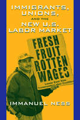

Examining the lives of immigrant workers, both on the job and off
Examining the lives of immigrant workers, both on the job and off


 Examining the lives of immigrant workers, both on the job and off
Examining the lives of immigrant workers, both on the job and off

|  |
Immigrants, Unions, and the New U.S. Labor MarketImmanuel Nesspaper EAN: 978-1-59213-041-2 (ISBN: 1-59213-041-0) |
"This is an original, major contribution to the power of solidarity among new migrant workers of color in the U.S. The case studies of worker collective action in the informal economy eloquently show that migrants in the global economy share common bonds and will organize against all odds. The organizing by Francophone Africans, Mexicans, and South Asians call attention to the exclusion of migrant workers of color in established unions. The book impressively demonstrates that a strong labor movement can only be established through the inclusion of those struggling outside the margins of traditional institutions."
—Bill Fletcher, Jr., President, TransAfrica Forum
In recent years, New Yorkers have been surprised to see workers they had taken for granted—Mexicans in greengroceries, West African supermarket deliverymen and South Asian limousine drivers—striking, picketing, and seeking support for better working conditions. Suddenly, businesses in New York and the nation had changed and were now dependent upon low-paid immigrants to fill the entry-level jobs that few native-born Americans would take. Immigrants, Unions, and the New U.S. Labor Market tells the story of these workers' struggle for living wages, humane working conditions, and the respect due to all people. It describes how they found the courage to organize labor actions at a time when most laborers have become quiescent and while most labor unions were ignoring them. Showing how unions can learn from the example of these laborers, and demonstrating the importance of solidarity beyond the workplace, Immanuel Ness offers a telling look into the lives of some of America's newest immigrants.
Excerpt available at www.temple.edu/tempress
"Worker self organization accounts for a huge percentage of formal and informal labor history in the U.S. and throughout the world. Manny Ness has chronicled some inspiring and recent accounts of great organizing by immigrant workers in the U.S. This type of organizing and mobilizing existing members provides our best hope for the future."
—Larry Cohen, Communications Workers of the World
"Manny Ness tells the compelling stories of the workplace organizing efforts of immigrants in New York City. The odds are against them. Many are undocumented, they have to contend with a restructured labor market that disadvantages low wage workers, and the unions are not much help. Nevertheless, these workers forged the solidarities and found the courage that made militant struggle possible. Read this fine book and hope!"
—Frances Fox Piven, Distinguished Professor of Political Science and Sociology, Graduate School of the City University of New York
"As government policies grow more repressive and corporate imperatives more
malevolent, Ness offers hope that a new path is possible for organizing the workplace."
—Elaine Bernard, Executive Director, Labor & Worklife Program, Harvard Law School
"[A] fine new book... the book's case studies are terrific.... this is what good books do...[t]hey provoke dialogue and debate."
—New Labor Forum
"The book is a sympathetic and informative treatment of a controversial subject. Recommended."
—Choice
"Together, these three cases studies form a coherent and successful project. Ness integrates a clear theoretical perspective on the impact of global capitalism on workers with a detailed analysis of the efforts made by these workers to transform their conditions of work, and their lives."
—Mobilization
"[A]n important and needed study of organizing unions by recent immigrants... This book should be in every library in New York City and be read by anyone running for mayor of the Big Apple."
—Multicultual Review
"Through interviews and from his extensive knowledge of labor history, Ness draws some interesting conclusions as to why these workers organized and what such organization might mean to the labor movement.... Ness' book gives us much to think about."
—Monthly Review
"Ness' work offers valuable lessons for union leadership and activists on both immigrant organizing and community unionism. Because he combines concise cases with links to the broader economic and labor issues, his work also has strong relevance for a wide range of educational contexts."
—Labor Studies
"[T]he book is full of excellent material on the changing labor market and the reality that old-fashioned class struggle is still the means to fight..."
—International Socialist Review
"Contributes greatly to an exciting new labor studies….A key strength of this book is the skill with which Ness situates what the immigrants and unions do within the context of a changing economy….We learn much about the relationship between immigrants and unions from Ness's fascinating ethnology."
—Contemporary Sociology
"Ness provides us with three well researched and compelling case studies of immigrant worker organizing in New York City...[the book] is a must read for scholars and activists interested in social movements, immigrants and labor. Not only is the book well written and carefully researched, but it also provides hope about the future of the labor movement."
—Social Forces
“Ness contributes to the ethnography of work by providing a qualitative understanding of contemporary immigrant workers’ lives…With this book, Ness provides not only a critical examination of the current U.S. labor movement, but also a detailed description of immigrant workers’ own interpretations of and explanation for their organizing efforts. This book will be of interest to those both within and outside the labor movement who are committed to its revival.”
—Anthropology of Work Review
"This is an important and well-researched book that usefully frames the challenges of immigrant workers organizing in restructuring urban labor markets in the United States while also showing the power of worker collective action. It will be of interest to scholars and students who are interested in learning more about labor organizing among segments of the workforce that are often regarded as ‘unorganizable’ and is suitable for use in undergraduate and graduate courses in urban studies, community development and labor studies."
—Urban Affairs Review
Preface
1. Why New Immigrants Organize
2. The Political Economy of Transnational Labor in New York City: The Context for Immigrant Worker Militancy
3. Unions and Immigrant Worker Organizing: New Models for New Workers
4. Mexican Immigrants, Class Formation, and Union Organizing in New York's Greengrocery Industry
5. Francophone West African Supermarket Delivery Workers Autonomous Union Organizing Outside of a Union
6. Black-Car Drivers: Industrial Restructuring and New Worker Organizing
7. The Post-September 11 Economic Crisis and the Government Crackdown on Immigrant Workers
8. Parallel Organizing: Immigrants and Unions
Notes
References
Index
Immanuel Ness is Professor of Political Science at Brooklyn College – City University of New York. He is the editor of the journal WorkingUSA. His books include Trade Unions and the Betrayal of the Unemployed: Labor Conflict in the 1990s and Organizing for Justice in Our Communities: Central Labor Councils and the Revival of American Unionism.
Labor Studies and Work
Race and Ethnicity
Sociology
© 2015 Temple University. All Rights Reserved. This page: http://www.temple.edu/tempress/titles/1744_reg.html.